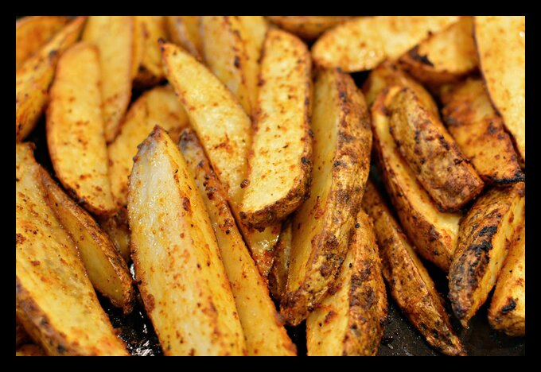

Potato

Description:
Baked Potato Wedges with so many amazing flavours.
Just as popular as fries, wedges are the perfect appetizer or snack!
Ingredients:
- potato
- sunflower oil
- garlic
- salt
Steps:
- Cut the potatoes into slices
- put sunflower oil on the slices
- salt the potatoes
- grate garlic on a fine grater and apply to the potatoes
- bake in the oven for 25-30 minutes at a temperature of 200 degrees